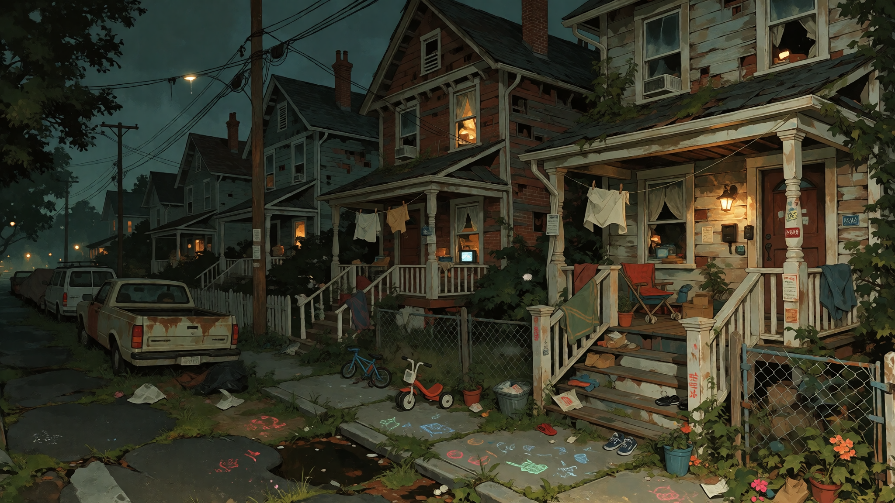

SAINT JUDE'S LANDING / HOLLOWS
THE
HOLLOWS
OLD HOUSES.
OVERGROWN YARDS.
FAMILIES.
THINGS THAT LOOK LIKE FAMILIES.
Somebody still lives there.
The Hollows are old residential territory that never quite got replaced. Houses stayed. Families stayed. Other families moved in. Some buildings emptied out. The city kept growing somewhere else and eventually just grew around all of it.
It is not abandoned.
It is just a little fucking strange.NORMAL SHIT, MOSTLY
STILL
LIVED IN.
This is not an abandoned district.
People actually live here. Families have lived here for generations. Other people moved in because the rent was cheaper. Some houses are beautifully maintained. Some are falling apart. Some look completely dead until somebody opens the front door and starts yelling at their kid to take the fucking trash out.
There are children here. Grocery deliveries. People mowing lawns. Somebody is always fixing a porch. Somebody always has a dog that will not shut the hell up.
People have birthdays here. People get divorced here. Somebody has a neighbor they hate. Somebody knows exactly which house has the good tomatoes in summer.
Most people are not spending their entire day wondering whether a skinwalker is going to crawl through the kitchen window.
It is still a neighborhood.


An empty-looking house is not necessarily empty.
This applies to the people, too.
02 / HOW IT GOT LIKE THIS
NOTHING
HAPPENED
ALL AT ONCE.
That's the problem.
People moved. Properties changed hands. Buildings got divided up. Roads stopped getting fixed. Businesses closed. Families left houses behind.
Nobody stood there one morning and declared the Hollows abandoned.
The city just kept changing while this part stayed recognizable enough to keep being called a neighborhood.
Eventually there were empty rooms, overgrown lots, half-maintained houses, old family properties, and entire buildings that nobody could agree about anymore.
That's how the Hollows got its reputation. Not because everything here is dead.
Because some things never really left.


03 / DOMESTIC CONFUSION
YOU CAN'T
ALWAYS TELL
WHICH IS WHICH.
A maintained house can have nobody living inside it.
A collapsing house can have somebody cooking dinner upstairs.
A boarded window does not necessarily mean the building is abandoned.
And sometimes the person waving at you from the upstairs window is not the person who lives there.
Sometimes the curtains are the only clue.


04 / INSIDE SOMEBODY'S HOUSE
INSIDE.
Most of the Hollows' worst things do not look like worst things.

Family photographs.
Children's books.
Expired food.
Mail.
Shoes beside doors.
PEOPLE LEFT THINGS BEHIND. That's the part that gets me.05 / WEATHER
THE
FOG.
The fog does not make the Hollows hard to see.
It makes them hard to place.
Houses get farther away than they should. Roads seem to change shape. A familiar corner looks wrong for half a second. A light appears where there wasn't one before.
Sometimes the fog is just fog.
Sometimes it isn't.


06 / THAT FEELING
SOMETHING
IS WATCHING.
Nobody agrees on what that means.
Sometimes it is an animal.
Sometimes it is a person.
Sometimes it is something that looks like a person until you get close enough to notice that it isn't.
The Hollows have mimics, skinwalkers, doppelgängers, face thieves, wrong-anatomy deer, voice imitators, shadow people, fog creatures, and other things that have apparently decided residential neighborhoods are acceptable places to live.


DON'T
LOOK TOO LONG.
Not because there's necessarily anything there.
That's somehow worse.
07 / TANSY
TANSY.
The Hollows are where Tansy is from.
He grew up around this shit.
That does not make him an explanation for the Hollows.
He's just from here.
TANSY →

08 / UNDER THE HOUSES
THERE'S
MORE
BELOW.
The Hollows were built on older things.
Roads. Foundations. Drainage. Utility tunnels. Basements. Rooms nobody finished. Infrastructure that got buried because somebody built something else on top of it.
The city did not remove them.
It built over them.


The Hollows are part of the same fucked-up city.

09 / OLD PAPERWORK
THE
OLD
STUFF.
The paperwork is worse than the neighborhood.


10 / AFTER DARK
IF YOU THINK YOU SAW SOMEBODY,
YOU PROBABLY DID.
THAT DOESN'T MEAN THEY WERE THERE.